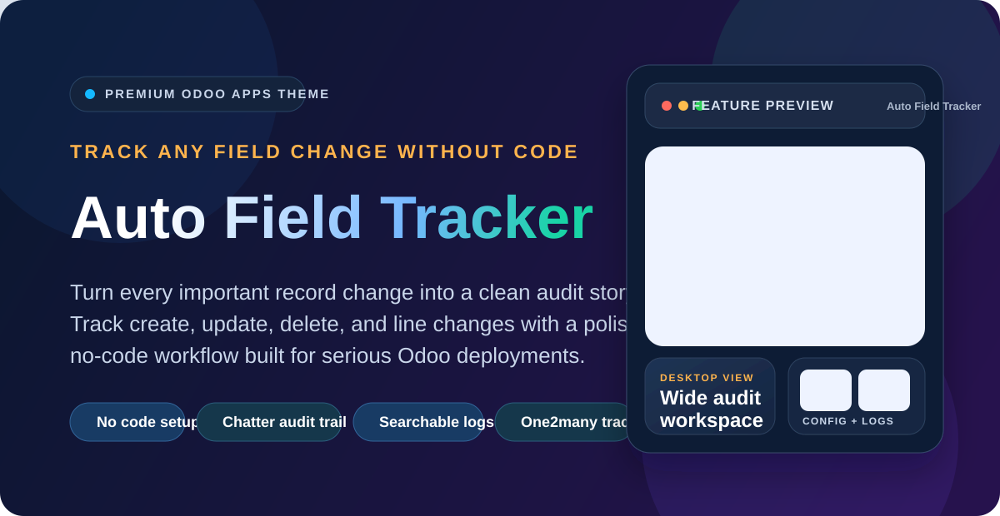
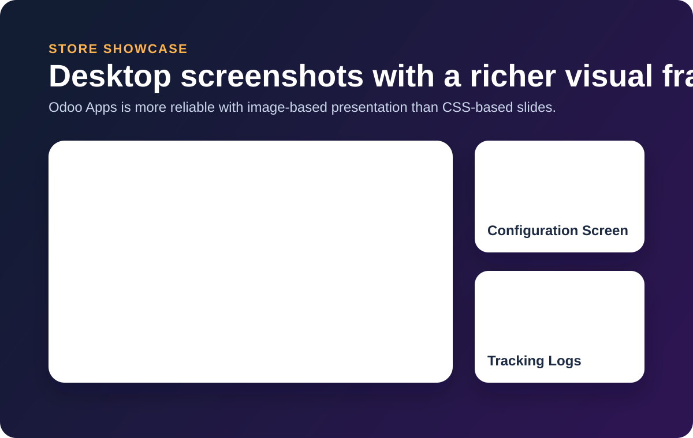

Configuration Screen

Tracking Logs


Auto Field Tracker helps teams audit create, update, delete, and One2many changes directly from Odoo with clear chatter history and searchable logs.
No code setup Chatter audit trail Searchable logs One2many tracking
Built for administrators and teams that need field-level visibility without custom code on every model.
Capture create, update, and delete operations directly in the record history.
Choose the model and fields to monitor from the Odoo interface.
Review changes later from a dedicated log view across tracked models.
Preserve important line-level updates that are often missed in standard workflows.